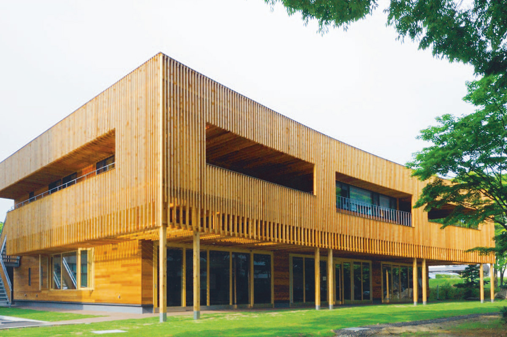

Access Map

Access to Saito Laboratory
Graduate School of Environmental Studies, Tohoku University
Advanced Social and Environmental Studies Department
Geo-Environmental Policy Studies (Energy Environment Group)
〒 980-8579
6-6-20 Aramaki Aoba, Aoba-ku, Sendai City
Tohoku University Aobayama East Campus
Ecolab 2F
📞 022-795-7402